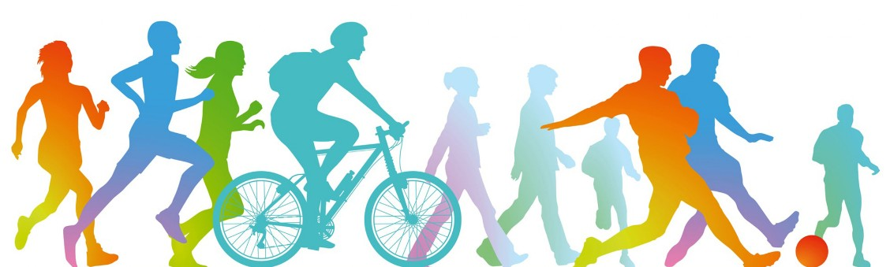
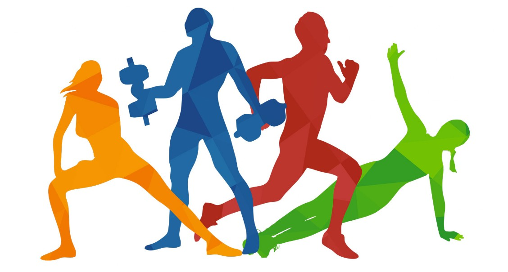

Любительский спорт - Спорт

SPORT
Здоровье до того перевешивает все остальные блага жизни, что поистине здоровый нищий счастливее больного короля.
Любительский спорт
ЛЮБИТЕЛЬСКИЙ СПОРТ. Согласно олимпийской хартии, любителем является тот, кто занимается спортом по своему собственному желанию, ради развлечения и своего физич. развития, но не получает от этого прямо или косвенно никакой материальной выгоды.
Характерно, что уже в названии большинства междунар. федераций по видам спорта подчеркивается, что это любительские объединения (бокса, легкой атлетики, баскетбола, плавания и т. д.). Если слово "любительская" и не указано в названии федерации, то в ее уставе или правилах обычно имеется положение (статут любительства), определяющее, кто считается любителем.
К соревнов. на первенство мира и Европы спортсмены-профессионалы не допускаются (за редким исключением); они разыгрывают первенство мира и Европы среди профессионалов. К участию в олимпийских играх допускаются также только спортсмены-любители.

Окончательное решение вопроса о том, является ли данный спортсмен любителем, входит прежде всего в компетенцию междунар. федерации по данному виду спорта. Статут любительства, принятый в той или иной федерации, принципиально не отличается от приведенного выше положения олимпийской хартии.
Уставы федераций обычно только конкретизируют определение любителя, иногда указывают максимальную стоимость призов, к-рые могут выдаваться любителям, но все любительские федерации запрещают выдачу денежных сумм за победу на том или ином соревнов., за установление нового мирового рекорда и т. п.
Появление термина "любительство" обусловлено стремлением господствующих классов буржуазного общества не допускать в свои ряды трудящихся и оградить себя от спортивной конкуренции со стороны людей физич. труда не только высокими размерами членских взносов в спортивных клубах, но и юридически. Рабочий человек, живущий только за счет своего труда, в буржуазном обществе не имеет необходимых условий для систематических спортивных тренировок. Только единицы рабочих-спортсменов, выделившиеся своими спортивными достижениями - результатом природной одаренности и трудолюбия, - получили доступ в любительские, или, как их называли по составу членов, буржуазные, клубы.
Практически трудящийся в капиталистическом обществе может полностью развернуть свои спортивные способности только тогда, когда он продается, т. е. идет в профессиональный спорт, или его покупают, т. е. за его достижения зачисляют в спортивный клуб и оказывают материальную поддержку. Зарубежная пресса часто сообщает о многочисленных фактах нарушения статута любительства в ряде стран.

Следует отметить, что ранее определение любительства носило более ярко выраженный классовый характер. Так, еще в 20-х гг. XX в. к соревнов. по академической гребле не допускались лица, занимавшиеся физич. трудом.
Любительский и профессиональный спорт не отделены друг от друга непроходимой стеной. Профессиональный спорт поглощает лучших спортсменов-любителей, обычно после одержания ими крупных междунар. побед. Нравы профессионального спорта (грубость, подкупы, закулисные махинации и т. п.) проникают и в среду спортсменов-любителей. Спортсмены-профессионалы оказывают влияние на любителей в области техники и методики тренировок.
Вопросы профессионализма и любительства не возникают в социалистических странах, где трудящимся созданы все условия для занятий физич. культурой и спортом. Попытки реакционных деятелей снизить успехи спортсменов СССР и стран народной демократии, объявив их "государственными любителями", не выдерживают критики, ибо ни одно государство не может содержать миллионные армии спортсменов, составляющие свыше 10% населения страны. ЛЮБКИ - шашечная позиция, в к-рой шашка (или дамка) может занять свободное поле между двумя изолированными чужими шашками, и при любом своем ходе противник будет вынужден отдать одну из этих шашек.